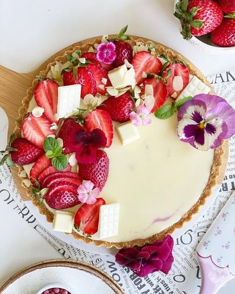

Moja beleška
SačuvanoSamo ću vam reći da je u pitanju kombinacija meni omiljenih jagoda, bele čokolade, kondenzovanog mleka i marscapone sira na podlozi od plazme i putera. Maaa... 🥰🥰🥰 Bukvalno da se zaljubiš na prvi zalogaj! Neću puno da dužim, pišem sastojke, a jedva čekam vaše utiske! 🍓🍓🍓
Sastojci
- Podloga
- Fil I
- Fil II
- Još
Priprema
Za podlogu standardno promešati sve sastojke i utisnuti ih po dnu i ivicama kalupa (ja sam koristila kalup sa odvojivim dnom za lakše vadjenje, prečnika 20cm) Podlogu ostaviti na hladjenju dok pripremate fil. Kod prvog fila potrebno je da sipate 200 gr kondenzovanog zasladjenog mleka u šerpicu i ugrejete na laganijoj temperaturi, pa tome dodate 200 gr svežih jagoda, posle minut mešanja već možete štapnim mikserom da izblendate jagode i da dodate pola želatina (prethodno ga sipate u malenu posudicu i prelijete sa dve kašike vode)Promešajte i prelijte preko podloge, pa vratite u frižider na hladjenje. Kod pripreme drugog fila isti je princip, sipajte kondenzovano mleko, dodajte čokoladu, mešajte dok se ne otopi, pa smesi dodajte marscapone sir, lepo sjedinite i na kraju dodajte pola želatina -istim principom kao kod prvog fila. Drugi fil prelijte preko prvog i ostavite par sati na hladjenju. Ohladjenom tartu dodajte sveže jagode i listiće badema, pa uživajte u ovim savršenim kremastim zalogajima, idealan je za toplije dane 💓
Originalni opis sa Instagrama
Jagoda sladoled tart 🍓🌸 Samo ću vam reći da je u pitanju kombinacija meni omiljenih jagoda, bele čokolade, kondenzovanog mleka i marscapone sira na podlozi od plazme i putera. Maaa... 🥰🥰🥰 Bukvalno da se zaljubiš na prvi zalogaj! Neću puno da dužim, pišem sastojke, a jedva čekam vaše utiske! 🍓🍓🍓 Podloga: •200 gr mlevene plazme •100 gr istopljenog putera •60 ml mleka •1 kašika meda Fil I : •200 gr kondenzovanog zasladjenog mleka •200 gr svežih jagoda •1/2 kesice želatina Fil II : •200 gr kondenzovanog zasladjenog mleka •100 gr bele čokolade •250 gr marscapone sira •1/2 kesice želatina Još: •sveže jagode, listići badema.. Za podlogu standardno promešati sve sastojke i utisnuti ih po dnu i ivicama kalupa (ja sam koristila kalup sa odvojivim dnom za lakše vadjenje, prečnika 20cm) Podlogu ostaviti na hladjenju dok pripremate fil. Kod prvog fila potrebno je da sipate 200 gr kondenzovanog zasladjenog mleka u šerpicu i ugrejete na laganijoj temperaturi, pa tome dodate 200 gr svežih jagoda, posle minut mešanja već možete štapnim mikserom da izblendate jagode i da dodate pola želatina (prethodno ga sipate u malenu posudicu i prelijete sa dve kašike vode)Promešajte i prelijte preko podloge, pa vratite u frižider na hladjenje. Kod pripreme drugog fila isti je princip, sipajte kondenzovano mleko, dodajte čokoladu, mešajte dok se ne otopi, pa smesi dodajte marscapone sir, lepo sjedinite i na kraju dodajte pola želatina -istim principom kao kod prvog fila. Drugi fil prelijte preko prvog i ostavite par sati na hladjenju. Ohladjenom tartu dodajte sveže jagode i listiće badema, pa uživajte u ovim savršenim kremastim zalogajima, idealan je za toplije dane 💓 • • • #strawberrytart #strawberrys #strawberrycake #tart #whitechocolatetart #dessert #springdessert #jagodatart #tartsajagodama #dezert #idejezadezert #prolećnidezert #zadovoljnahr #slatkisi #mojirecepti #izmojekihinje #slatko